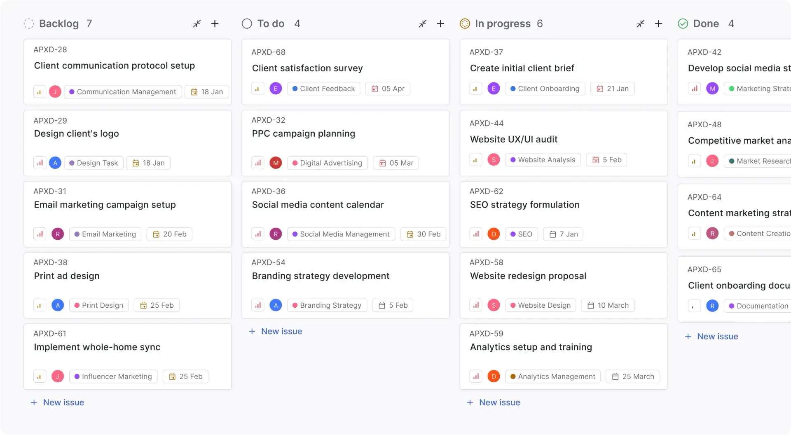
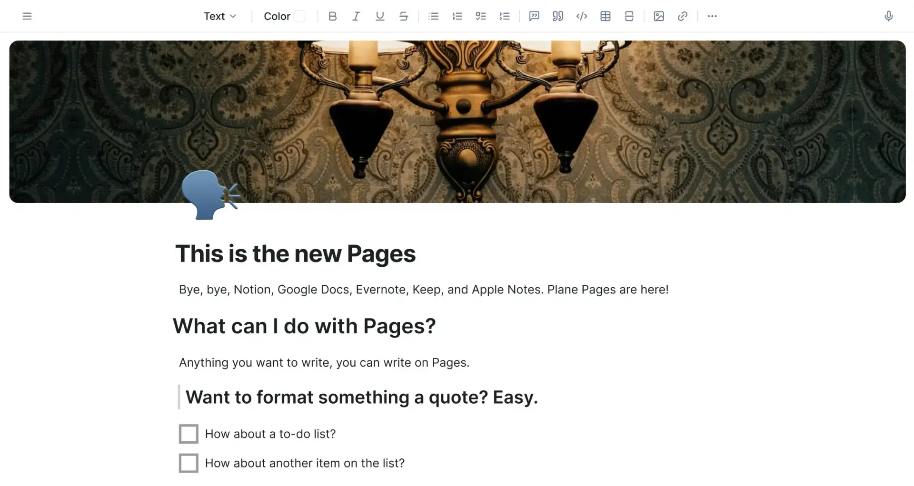
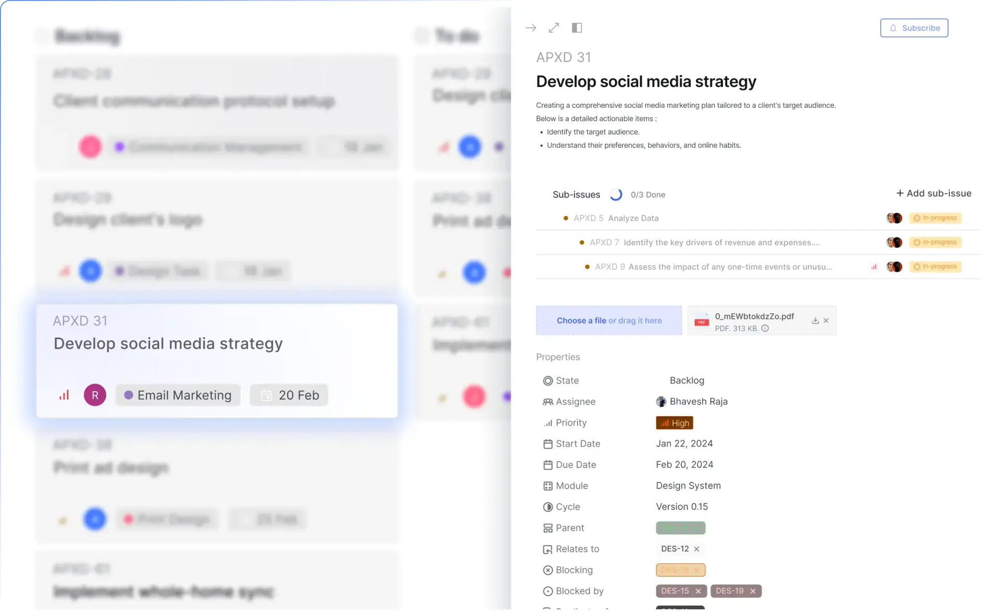
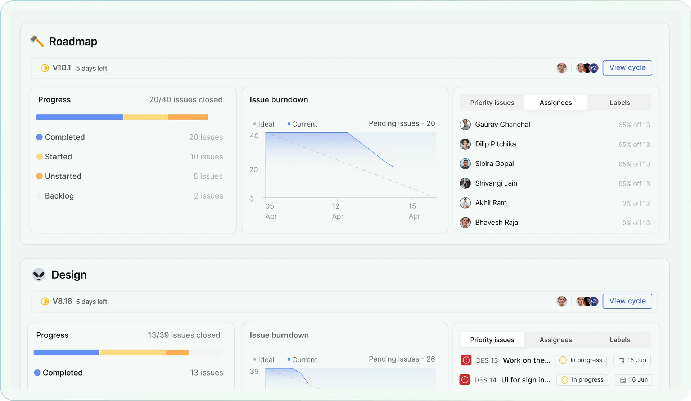
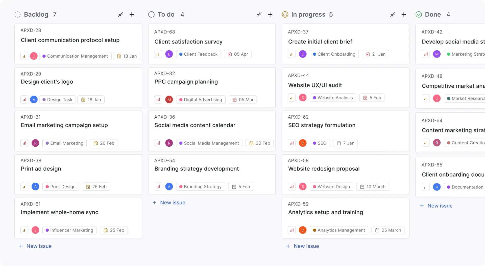
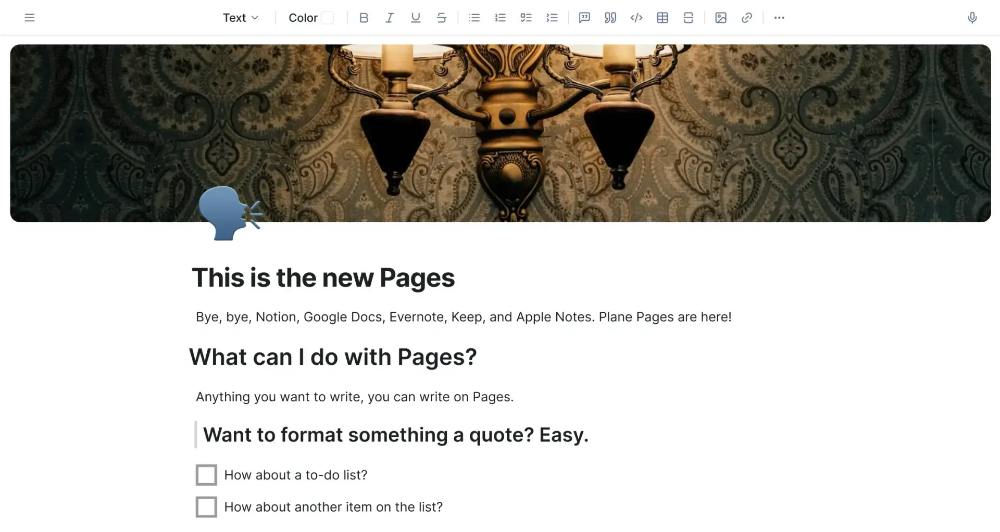
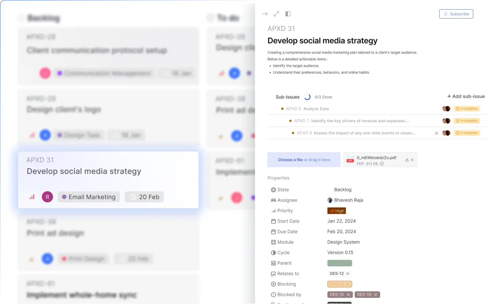
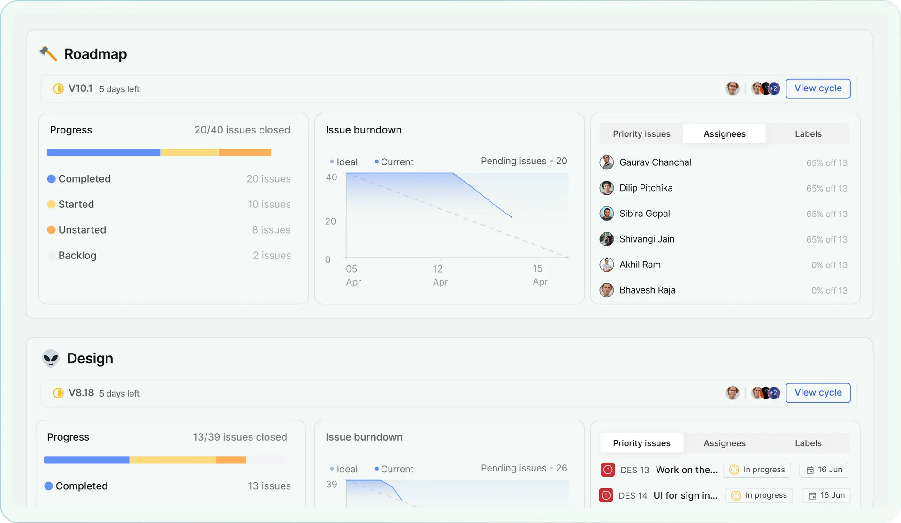

Plane
 项目首页
项目首页 Plane 是一个开源的项目管理工具，使用 Python 语言开发，旨在帮助团队跟踪问题、运行迭代周期，并管理产品路线图，同时避免陷入管理工具本身的混乱中。
 







 如何部署在线 Plane
如何部署在线 Plane
什么是 Plane
- Plane 的诞生源于开发者对现有项目管理工具的不满。创始团队意识到，一个理想的工具应该既能满足复杂项目的需求，又能保持足够的灵活性和易用性。Plane 的核心理念是提供一个简洁、灵活、功能强大的项目管理解决方案，涵盖从基础到高级的各种项目管理需求，同时保持开源透明，让团队能够完全掌控和定制自己的项目管理工具。
功能列表
- 周期管理 迭代规划：通过 “周期” (Cycles) 功能规划和跟踪短期目标。进度可视化：燃尽图等工具提供直观的项目进度洞察。回顾与分析：周期结束后进行回顾，持续改进团队效率。
- 模块化项目拆分：将大型项目分解为可管理的模块。跨团队协作：在团队间分配模块，实现更好的协作。进度跟踪：轻松监控各模块的完成情况。
- 自定义视图 灵活过滤：创建自定义过滤器，只显示关键信息。一键保存与共享：轻松保存和分享自定义视图。多种展示模式：支持看板、列表、甘特图等多种视图模式。
- 页面功能AI 辅助编辑：集成 AI 功能，辅助内容创作。即时协作：团队成员可以实时协作编辑页面。任务关联：轻松将页面内容转化为可操作的任务。
- 实时分析数据可视化：直观展示项目进度、团队效率等关键指标。趋势分析：发现潜在问题，及时调整项目方向。自定义报告：根据需求生成定制化的项目报告。